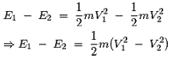

Power Plant
Thermal Power Plant
Steam Boiler
• Fire Tube Boiler
• Water Tube Boiler
• Boiler Feed Water Treatment
• Feed Water and Steam Circuit of Boiler
• Steam Boiler Furnace
• Coal Combustion Theory
Methods of Firing Steam Boiler
Fluidized Bed Combustion
Hydro Power Plant
Diesel Power Station
Nuclear Power Plant
Cogeneration
Solar Energy System
Basic Wind Energy
Wind Turbine
Theory of Wind Turbine
Thermoelectric Power Generators
Magneto Hydro Dynamic Power Generation
Economics of Power Generation
Economiser in Thermal Power Plant
Steam Condenser of Turbine
Jet Steam Condenser
Surface Steam Condenser
Theory of Wind Turbine
For determining power extracted from wind by wind turbine we have to assume a air duct as shown in the figure. It is also assumed that the velocity of wind at the inlet of the duct is V1 and velocity of air at the outlet of the duct is V2. Say, mass m of the air is passed through this imaginary duct per second.
Now due to this mass the kinetic energy of wind at the inlet of the duct is,
Similarly, due this mass the kinetic energy of wind at the outlet of the duct is,
Hence, kinetic energy of wind changed, during flow of this quantity of air from inlet to outlet of the imaginary duct is,

As we already said that, mass m of the air is passed through this imaginary duct in one second, hence the power extracted from the wind is same as the kinetic energy changed during flow of mass m of the air from inlet to outlet of the duct. Since, power is defined as change of energy per second. Hence, this extracted power can be written as,
As mass m of the air passes in one second, the quantity m is referred as mass flow rate of the wind. If we think of that carefully, we can easily understand that mass flow rate will be same at inlet, at outlet and as well as at every cross - section of the air duct. This is because, whatever quantity of air is entering the duct, the same is coming out from the outlet.
If Va, A and ρ are the velocity of the air, cross - sectional area of the duct and density of air at the turbine blades respectively, then mass flow rate of the wind can be represented as,
Now, replacing m by ρVaA in equation (1), we get,
Now, as the turbine is assumed to be placed at the middle of the duct, the wind velocity at turbine blades can be considered as average velocity of inlet and outlet velocities.
To obtain maximum power from wind, we have to differentiate equation (3) in respect of V2 and equate it to zero. That is,
From, the above equation it is found the theoretically maximum power extracted from the wind is in the fraction of 0.5925 of it's total kinetic power. This fraction is known as Betz Coefficient. This calculated power is according to theory of wind turbine but actual mechanical power received by the generator is lesser than that and it is due to losses for friction rotor bearing and inefficiencies of aerodynamic design of the turbine.
From equation (4) it is clear that the extracted power is
1) Directly proportional to air density ρ. As air density increases, the power of the turbine increases.
2) Directly proportional to swept area of the turbine blades. If the length of the blade is increased, the radius of the swept area increases accordingly so turbine power increases.
3) Turbine power also varies with velocity3 of the wind. That indicates it velocity of wind is doubled, the turbine power will increase to eight folds.
 by
by